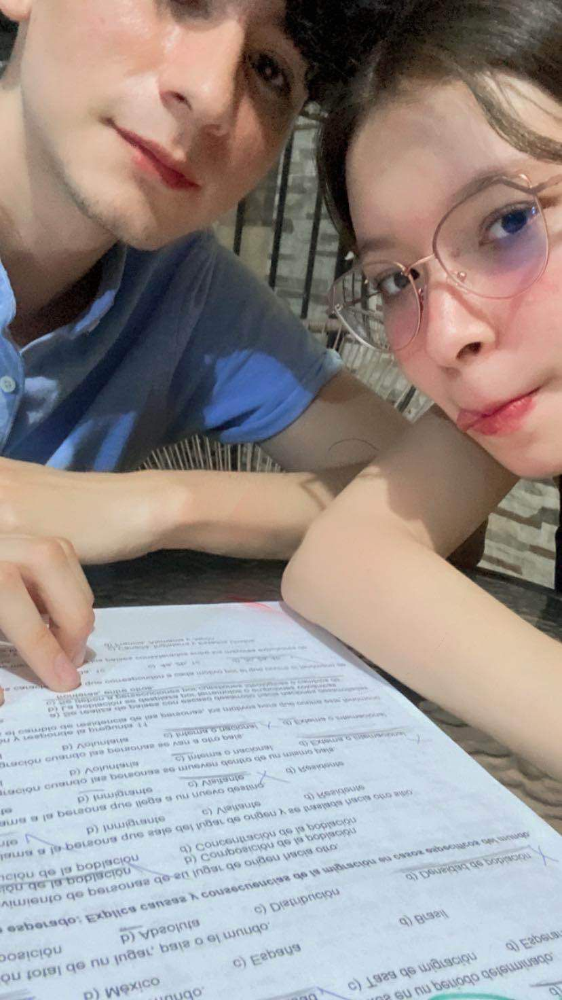

Nací en Monterrey, Nuevo Léon, México. Una ciudad de doble personalidad, que parece tecnológica, industrial y avanzada, pero al mismo tiempo está llena de desigualdad, pobreza e ignorancia. Crecí con mis abuelos y mi papá. Tuve una educación increíble en la primaria, radicalmente diferente a lo habitual. He aprendido muchas cosas en mi vida.
Actualmente estoy construyendo mis habilidades como Front-End Developer, quiero contruibuir a la sociedad creando y desarrollando aplicaciones útiles, además quiero ser independiente y hacer que el dinero deje de ser un obstáculo para crear, y ser libre.
